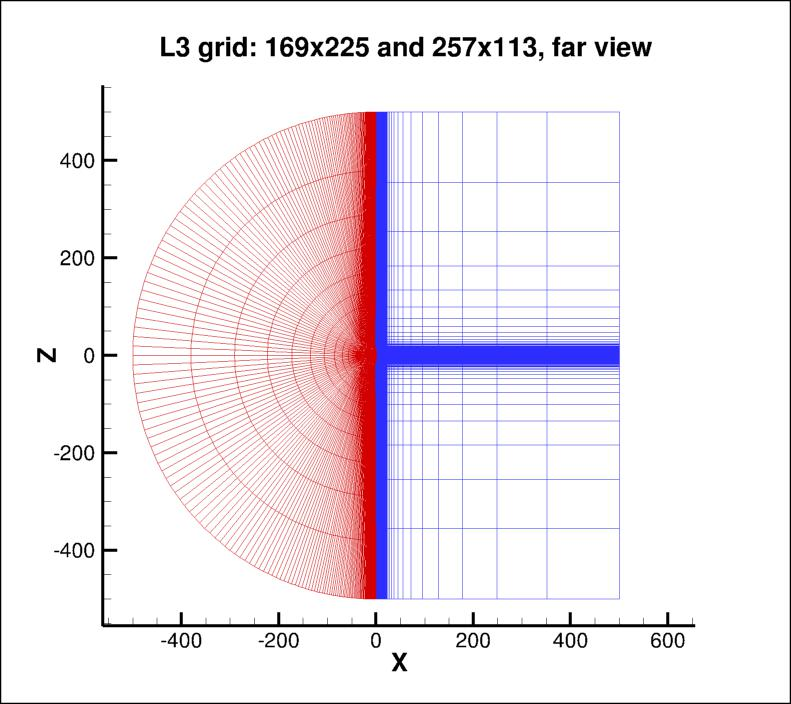

|
Langley Research CenterTurbulence Modeling Resource |
Return to: 2D Airfoil Near-Wake Verification Case Intro Page
Return to: Turbulence Modeling Resource Home Page
Grids - Airfoil Near-Wake Case
Note that these grids are similar to those originally developed for this airfoil, except that the current
grids have farfield extent of 500c (the original grids had farfield
extent of only 20c).
A series of 5 nested 2-D grids are provided for
the Nakayama Model-A airfoil (with sharpened trailing edge).
Each coarser grid is exactly every-other-point
of the next finer grid, ranging from the finest (L1) 2369 x 449 (divided into two zones of 673 x 897 and 1025 x 449) to the coarsest (L5) 149 x 29 grid
(divided into two zones of 43 x 57 and 65 x 29).
The finest grid has minimum spacing at the wall of y=2.5 x 10-6, giving an approximate average
y+ between 0.1 and 0.2 over the airfoil at the Reynolds number run.
The grid is stretched in the wall-normal direction, and the clustering is maintained in the
wake region. The original topology is a so-called "C-grid," with the grid wrapping around the
airfoil from downstream farfield, around the lower surface to the upper, then back to
the downstream farfield again; the grid connects to itself in a
1-to-1 fashion in the wake. However, in this case the grid has been reconfigured and divided into 2 zones, the first covering the entire
wake region, and the second covering the airfoil. There are 1025 points on the airfoil surface on the finest
grid (65 points on the coarsest grid). There are 673 points along the wake from the
airfoil trailing edge to the outflow boundary on the L1 grid (43 points on the L5
grid).
The figures below show two views of the L3 grid (169 x 225 and 257 x 113).

Note: be sure to use double precision when reading the grids!
STRUCTURED VERSIONS OF GRIDS
PLOT3D Files
The structured PLOT3D grids are given in two different ways, as 2-D grids (x-y plane) or as 3-D grids (two
identical x-z planes, separated by a distance y=1,
giving one spanwise cell for all grid levels). You may use whichever is more convenient for your particular
application.
Format for the structured 2D grids is PLOT3D-type, formatted, MG, 2D (nbl=1) - note that you
must use double precision when reading! :
Download the 2-D version of the grids in PLOT3D format here:
Format for the structured 3D grid is PLOT3D-type, formatted, MG, 3D (nbl=1, and idim in this case is 2) - note that you
must use double precision when reading! :
read(2,*) nbl
read(2,*) (idim(n),jdim(n),n=1,nbl)
do n=1,nbl
read(2,*) ((x(i,j,n),i=1,idim(n)),j=1,jdim(n)),
+ ((y(i,j,n),i=1,idim(n)),j=1,jdim(n))
enddo
read(2,*) nbl
read(2,*) (idim(n),jdim(n),kdim(n),n=1,nbl)
do n=1,nbl
read(2,*) (((x(i,j,k,n),i=1,idim(n)),j=1,jdim(n)),k=1,kdim(n)),
+ (((y(i,j,k,n),i=1,idim(n)),j=1,jdim(n)),k=1,kdim(n)),
+ (((z(i,j,k,n),i=1,idim(n)),j=1,jdim(n)),k=1,kdim(n))
enddo
Download the 3-D version of the grids in PLOT3D format here:
If desired, example Neutral Map Files associated with 3-D version of the grids are given here (these files specify grid indices associated with each boundary condition - see The Neutral Map File):
CGNS Files
The structured grids are also available as CGNS files (3-D versions only, with two identical x-z planes, separated by a distance y=1, giving one spanwise cell for all grid levels). Note that the BCs written inside the CGNS files are for guidance only, and may not reflect the appropriate BCs needed for your application. To read/write CGNS files, (free) software may be necessary if your pre/post-processing tools do not already handle it. See: CGNS Website for details.
Download the 3-D version of the grids in CGNS format (gzipped) here:
UNSTRUCTURED VERSIONS OF GRIDS
CGNS and AFLR3 Files
The unstructured versions of the same grids are all given as CGNS and AFLR3 (UGRID) files. Note that the BCs written inside the CGNS files are for guidance only, and may not reflect the appropriate BCs needed for your application. To read/write CGNS files, (free) software may be necessary if your pre/post-processing tools do not already handle it. See: CGNS Website for details.
The unstructured grids are all given as 3-D grids (two identical x-z planes, separated by a distance y=1, giving one spanwise cell for all grid levels). They are given as hexahedra (quadrilaterals in the x-z plane). Note that duplicate gridpoints in the C-mesh wakes are removed when writing the structured grids as unstructured.
Download the unstructured CGNS grids (gzipped) as 3-D hexahedra (quadrilaterals in x-z plane) here:
Download the unstructured AFLR3 grids (gzipped) as 3-D hexahedra (quadrilaterals in x-z plane) here:
Return to: 2D Airfoil Near-Wake Verification Case Intro Page
Return to: Turbulence Modeling Resource Home Page
Recent significant updates:
10/02/2023 - added AFLR3 (UGRID) versions of unstructured grids
Responsible NASA Official:
Ethan Vogel
Page Curator:
Clark Pederson
Last Updated: 10/02/2023